Fate/Grail Tactics on Foundry
Beginner's Guide
How to join, play and run a war in the F/GT system for Foundry VTT.
Written for the Normal ruleset, Great Holy Grail War, two factions. October 2026.
1. Joining the game
Your GM sends you a link that ends in /join. Open it in Chrome, Edge or Firefox on a computer. A screen at least 1024 × 768 is needed; 1920 × 1080 is best.
- Pick your user name in the first box, for example Player2.
- Type the password the GM gave you.
- Press Join Game Session.
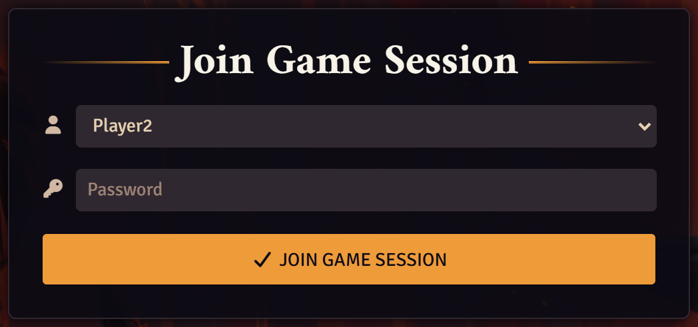
The first time you join, Foundry may open a User Configuration window. You can close it.
2. The game in two minutes
F/GT is a tactical wargame on a square grid. Each square is a panel. Two factions fight; each player controls one faction.
- Servants are your fighters: Saber, Archer, Lancer, Rider, Caster, Assassin and Berserker.
- Each Servant has a Master. Masters are weak, but they hold Command Spells and keep their Servant strong. A Servant far from its Master fights worse.
- Each faction starts in its home base: the coloured rows at its edge of the board.
- A Turn belongs to a faction, not to one unit. In your Turn you move and attack with several units.
- A Round is one Turn for each faction, plus a short GM slot. The order is rolled again every Round.
- Durations are written in ◈. One ◈ is one Round's worth of Turns, 3 in this war.
How you win
- Elimination. Your faction is the last one standing.
- The Holy Grail. After 9 Servants are defeated, the Grail appears on the board. Hold a unit next to it for a full Round, with no enemy within 2 panels, and you win.
The numbers on a unit
| Stat | What it does |
|---|---|
| Health | Damage taken comes off this. At 0 the unit is defeated. |
| Agility | Used to Evade. A big hit also drains it. |
| Luck | Spent on Luck Checks, 1 per try. |
| MOV | How many panels the unit can move in one Move. |
| Range | How far its Normal Attack reaches. |
| BA (STR) / BA (MAG) | Base Attack: the starting damage of its attacks. |
| Sustainability | How long a Servant survives without a Master. |
3. Your screen
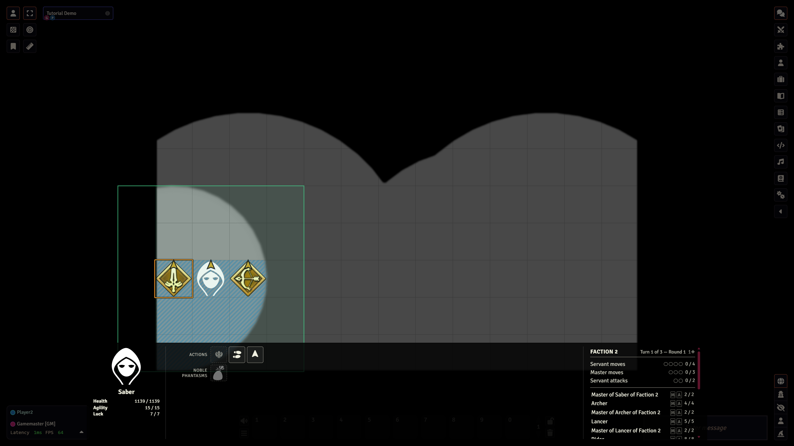
- The board fills the middle. Dark areas are out of sight. Click one of your tokens to see through it.
- The action bar runs along the bottom when you select one of your units.
- The turn panel sits at the right end of the action bar. It shows whose Turn it is and what your faction has left.
- The sidebar on the far right holds the chat log. Attack cards appear there.
The action bar
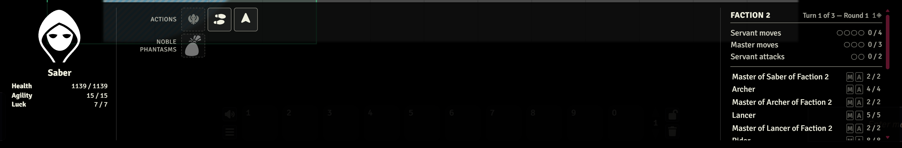
- Actions: Attack, Move, Facing and more.
- Noble Phantasms: the Servant's big moves. They unlock in Round 6 (Assassin in Round 4).
- A greyed button tells you why when you hover it, for example "no attacks are permitted during the first Round".
The unit sheet
Double-click a token to open its sheet. It shows every stat, its Master and what it did this Turn.
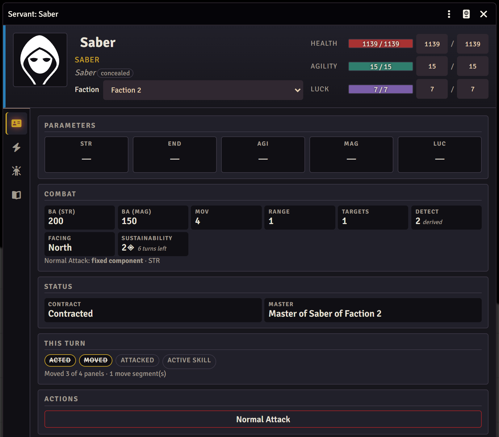
4. Your Turn: move and attack
The turn panel says Turn 1 of 3 — Round 2 and lists your faction's budget for this Turn:
| Budget | Per Turn |
|---|---|
| Servant moves | up to 4 Servants may move |
| Master moves | up to 3 Masters may move |
| Servant attacks | up to 2 Servants may attack |
Each unit gets one Move and one Attack per Turn, in either order: Move then Attack, or Attack then Move. Never Move, Attack and Move again. Using an active Skill counts as that unit's move.
Moving
- Click Move on the action bar, or just start dragging.
- Drag the token to its new panel. A label shows how many panels the path uses.
- Let go. The move is checked step by step; an illegal move is refused.
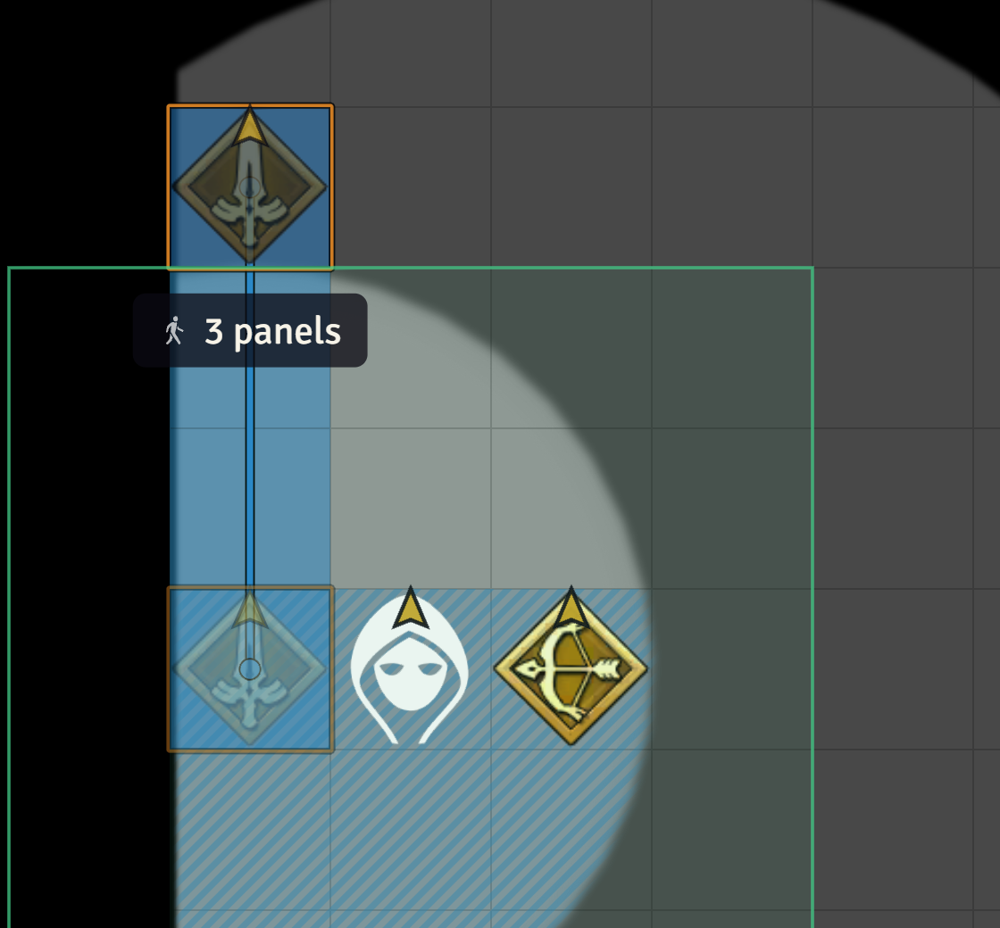
Attacking
- Select your Servant and click Attack.
- Hover an enemy. A preview shows the damage range and ✓ Legal — click to confirm, or why it is not legal.
- Click the target. A review window opens.
- Press Attack. Re-aim picks again; Cancel spends nothing.
Right-click or Esc cancels while you aim. Tab cycles through legal targets.
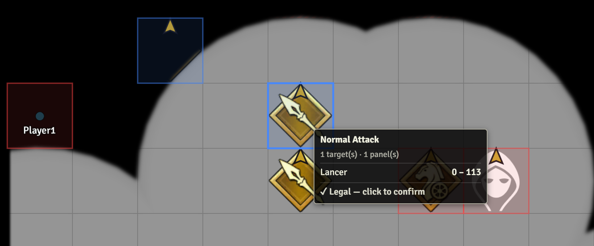
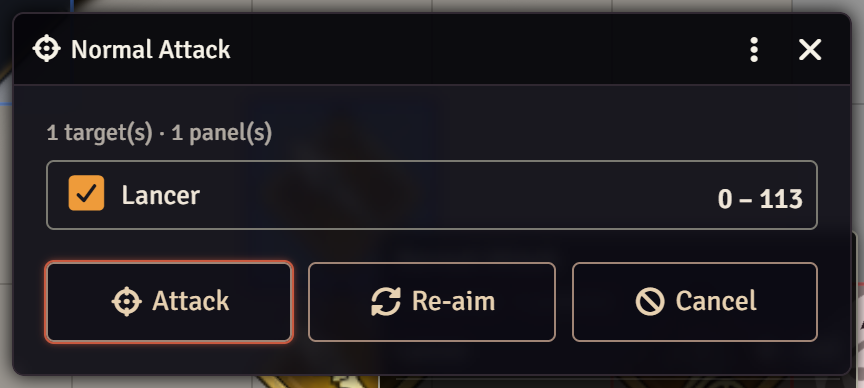
Ending your Turn
When you are done, press End Turn at the bottom of the turn panel. On a small screen, scroll the turn panel down to reach it.
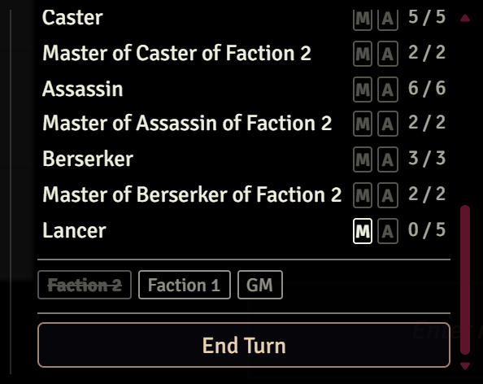
End Turn is greyed out while a rule forces you to do something first. The panel lists what is still owed.
5. When you are attacked
An attack creates a card in the chat log. If the decision is yours, the Awaiting you panel appears near the top of the screen with a countdown. Click a row to jump to its card.
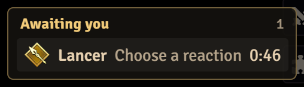
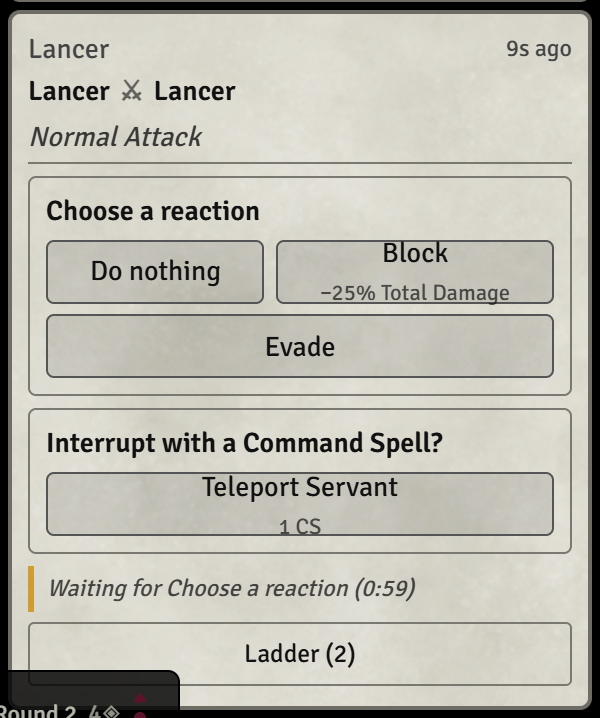
| Button | What happens |
|---|---|
| Do nothing | Take the hit. |
| Block | Take the hit, but 25% less damage. |
| Evade | Roll against Agility. On a success the attack misses. On a failure you take the full hit. |
You have 60 seconds to react. If time runs out, the game picks the option that costs nothing, which is Do nothing.
After a failed Evade the card may ask Accept the hit, or spend a Command Spell? Press Accept, or spend a Command Spell to escape.
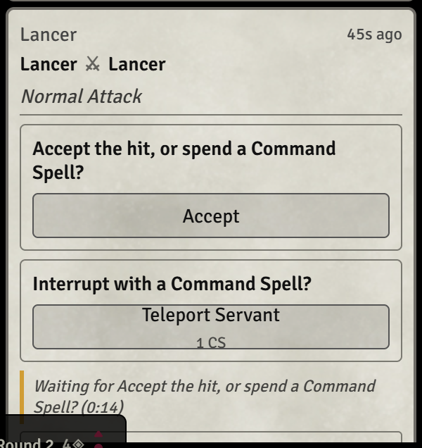
If your Servant survives and the attacker is in its Range, the card may then offer Counter. A Counter is an attack back; it cannot itself be countered.
6. Reading an attack card
When the attack is resolved, the card shows the damage in large numbers. Press Damage breakdown to see every step.
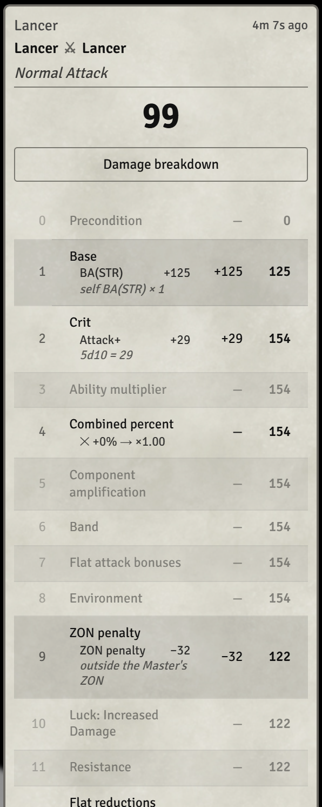
- Damage breakdown: every modifier, in order.
- Rolls: the dice that were rolled.
- Ladder: each step of the exchange, such as react → evade, evadeRoll → fail.
- Some numbers belong to the other side. The card says "1 hidden — the other side's" instead of showing them.
7. Masters and Command Spells
Keep each Master near its Servant. A Servant outside its Master's ZON loses 5d10 damage on attacks and cannot use its Noble Phantasm. A Master's attacks on Servants are weak, and a Servant's hit can defeat a Master outright.
Command Spells
Each Master holds a few Command Spells. They are single-use orders: heal, teleport, boost damage, block damage and more. They are shown on the Master's sheet.
- On your own Turn: select the Master and press Command Spell on its action bar.
- Before your attack: a Before the attack card offers boosts such as Damage Up. Press one, or Continue.
- During an attack: the card shows Interrupt with a Command Spell? with the commands that are legal right now.
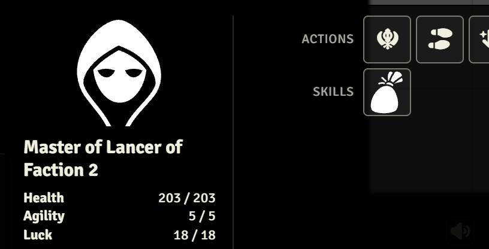
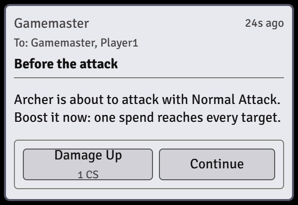
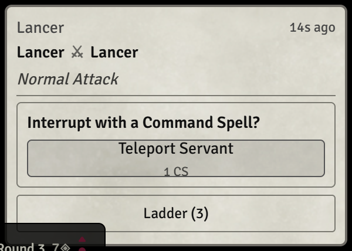
8. GM: before the session
Give every user a password
The join link is public. Anyone who has it can pick a user, so set a password on every user, the Gamemaster first. Leaving the Gamemaster without one hands out full control.
- From the game, open the Settings tab of the sidebar, then User Management under Game Access. Or go to
/players. - Type a password in each row.
- Press Save and Return, then send each player their own password.
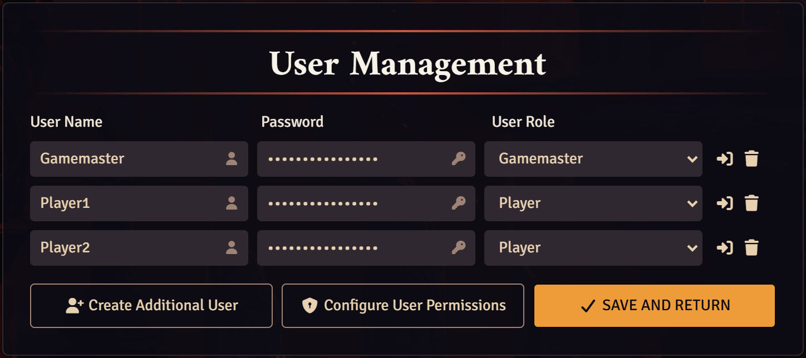
Factions and players
Each faction lists the users who play it. Change colours, players and alliances under Settings → Game Settings → Fate/Grail Tactics → Manage Factions. In this world Player1 plays Faction 1 and Player2 plays Faction 2.
Optional: clear the chat
Old test wars leave many cards in the chat log. Clearing it before a session makes new cards easy to find.
9. GM: building a war
Everything starts from the Actors tab of the sidebar. The F/GT buttons sit at its top.
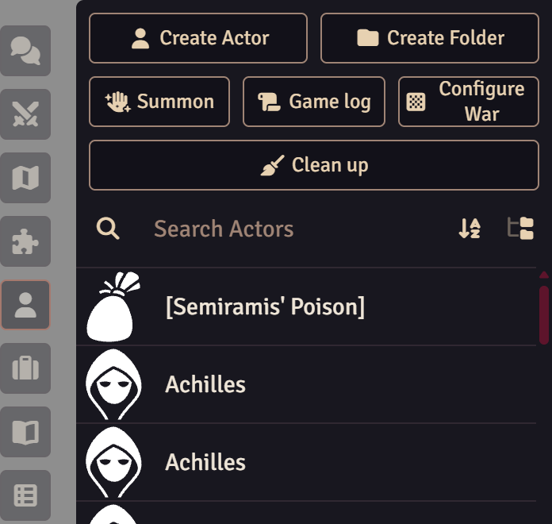
The wizard has six tabs. Work left to right.
War
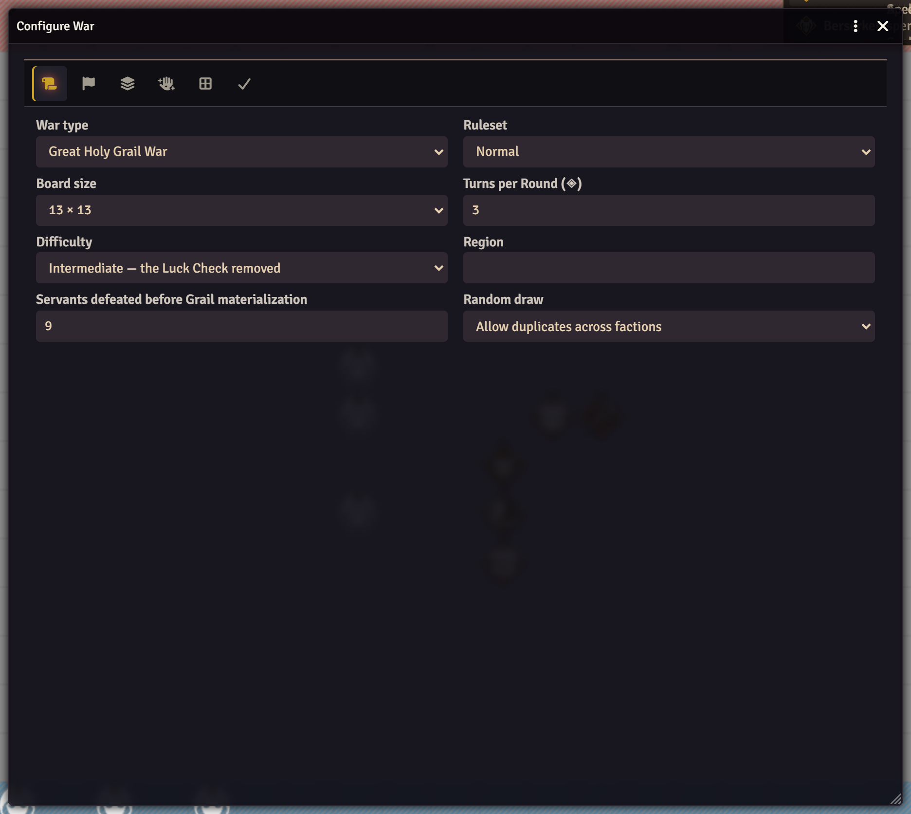
- Ruleset Normal uses the seven generic class Servants. Advanced uses the named Servants.
- Difficulty: Beginner removes damage modifiers and Luck Checks; Intermediate removes Luck Checks; Expert removes nothing.
- Leave Region empty for a neutral board.
Factions and Containers
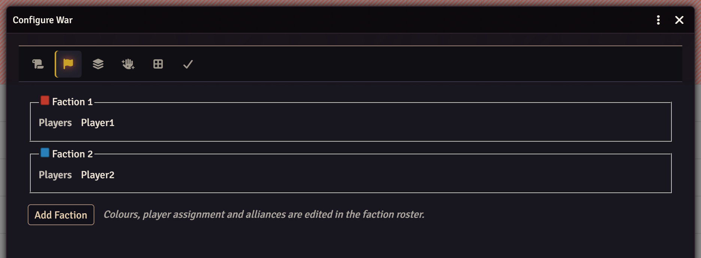
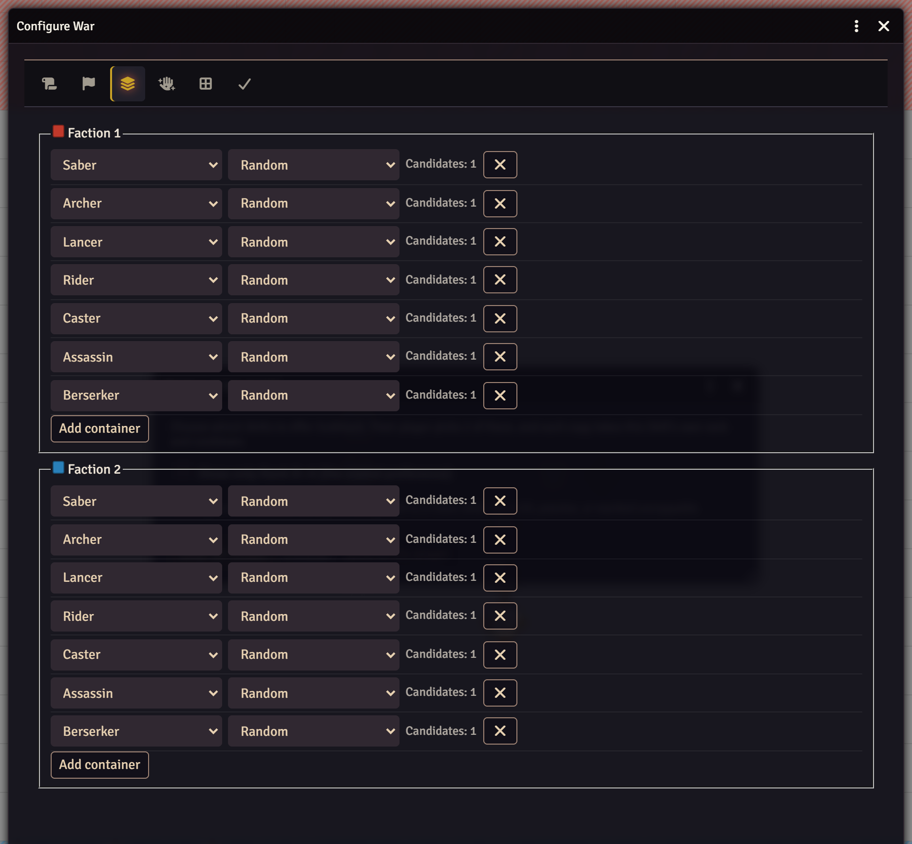
Servants
Press Roll all. Each Servant's Health, Agility and Luck are rolled and shown with the dice. Re-roll a single line with its dice button, or a whole Servant with Draw another.
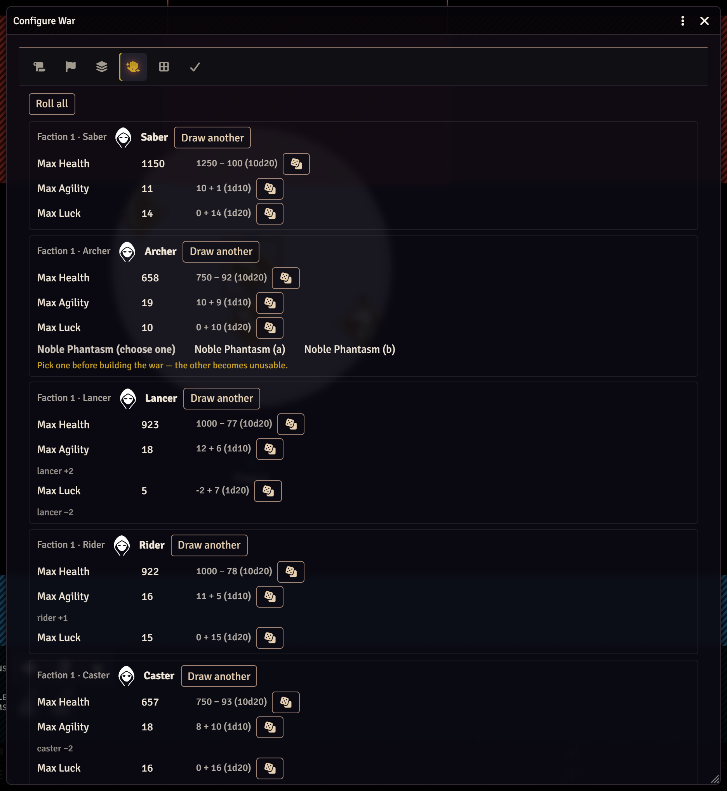
Archer, Caster and Berserker have two Noble Phantasms. Pick one for each before you build; the other becomes unusable.
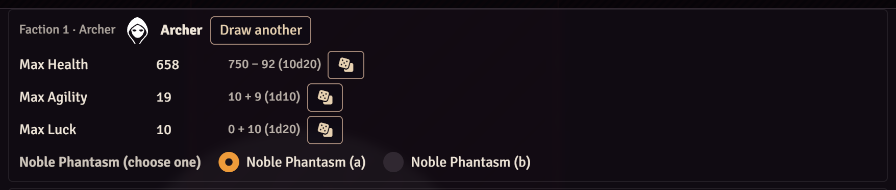
Board and Confirm
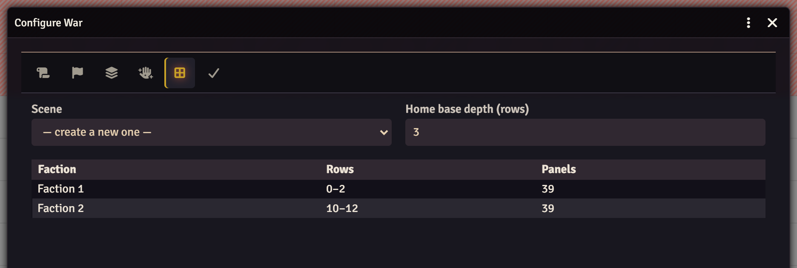
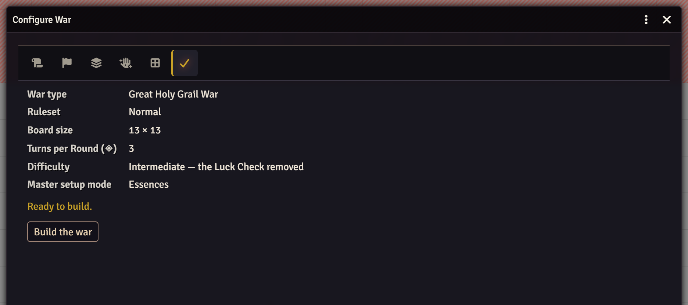
The wizard creates the scene, paints both home bases, creates the 28 actors and places their tokens.
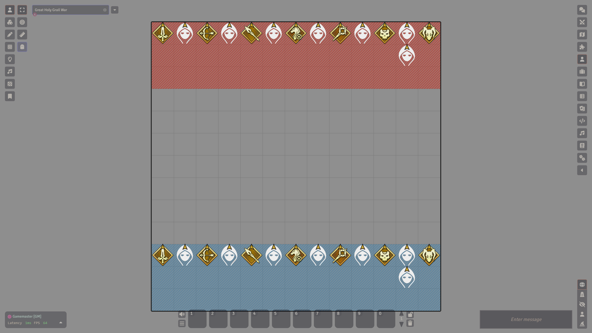
10. GM: running the match
Starting
Open the Combat tab of the sidebar. It lists Faction 1, Faction 2 and GM. Press Start Combat when everyone is in. The turn order is rolled and Round 1 begins.
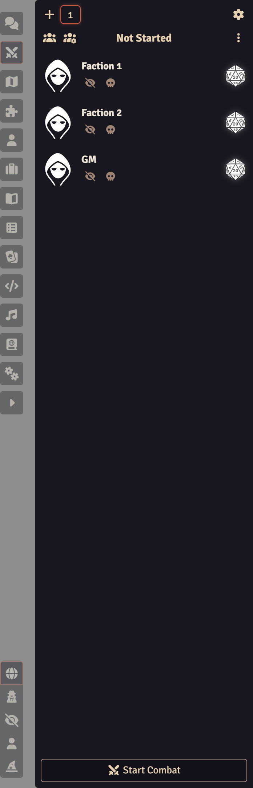
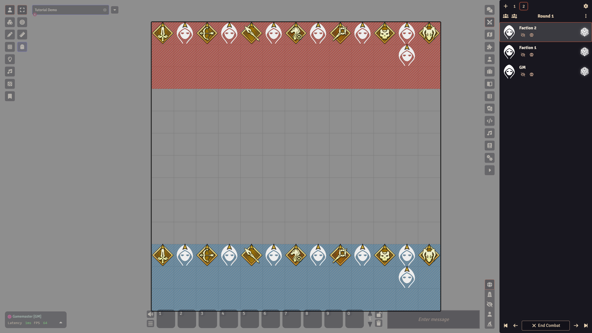
Each Round
- Each player takes their Turn and presses End Turn.
- The last slot of every Round is the GM. Press the → (Next Turn) arrow at the bottom of the tracker to finish it.
- The next Round starts and the order is rolled again. The GM is always last.
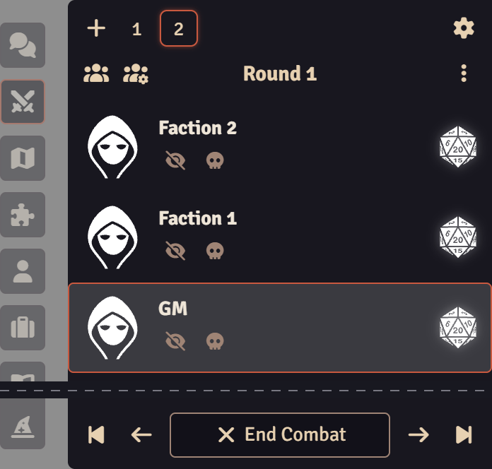
While the players play
- Keep your GM tab open and in front. Every rule runs on the GM's browser. If the GM leaves, the game stops.
- Use one GM tab only.
- The GM sees every waiting decision in Awaiting you. Each waiting card has Decide for them if a player is away.
- If an end-of-Turn window opens, answer it before doing anything else.
The Game log
Game log on the Actors tab lists everything that happened, by Round. Filter by Round, kind or unit. Export for a bug report saves it for a developer.
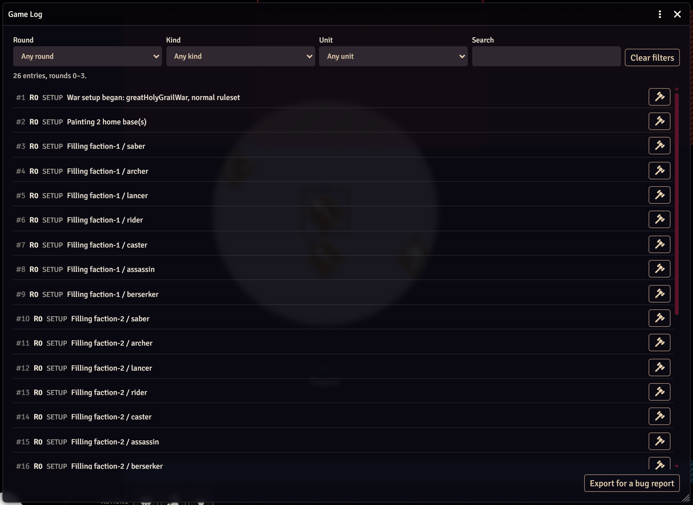
11. When something seems stuck
- A card says "Waiting for…". Someone has a decision open. Check Awaiting you. Each window closes by itself: 60 seconds for a reaction, 45 for the rest.
- A card sits on "Interrupt with a Command Spell?". That is normal. It moves on after 45 seconds.
- Nothing moves for several minutes. The GM reloads their browser tab (F5). The attack resumes from where it stopped.
- A player cannot move a token. It is not their Turn, or that unit already used its move. The token's message says which.
- A player's screen looks wrong. They reload their own tab and join again.
12. Quick reference
Timers
| Window | Time | If nobody answers |
|---|---|---|
| Reaction (Do nothing, Block, Evade) | 60 s | Do nothing |
| Luck Check, Counter, Command Spell | 45 s | Decline; nothing is spent |
Key Rounds
| When | What |
|---|---|
| Round 1 | No attacks of any kind. Move into position. |
| Round 4 | Assassin's Noble Phantasm unlocks. |
| Round 6 | Every other Noble Phantasm unlocks. |
| After 9 Servants fall | The Holy Grail appears. |
The Normal Servants
| Class | Base Health | MOV | Range | BA STR / MAG | Sustainability |
|---|---|---|---|---|---|
| Saber | 1250 | 4 | 1 | 200 / 150 | 2◈ |
| Archer | 750 | 4 | 4 | 100 / 125 | 5◈ |
| Lancer | 1000 | 5 | 2 | 125 / 125 | 2◈ |
| Rider | 1000 | 8 | 1 | 100 / 150 | 2◈ |
| Caster | 750 | 5 | 3 | 50 / 150 | 4◈ |
| Assassin | 500 | 6 | 2 | 50 / 100 | 1◈ |
| Berserker | 750 | 3 | 2 | 100 / 125 | 2◈ |
Base Health is before the setup roll of ± 10d20.
Controls
| To | Do |
|---|---|
| Select a unit | Click its token |
| Open its sheet | Double-click its token |
| Move | Drag the token |
| Cycle targets while aiming | Tab |
| Cancel aiming | Right-click or Esc |
| Pan the board | Right-drag on empty board |
| Zoom | Mouse wheel |